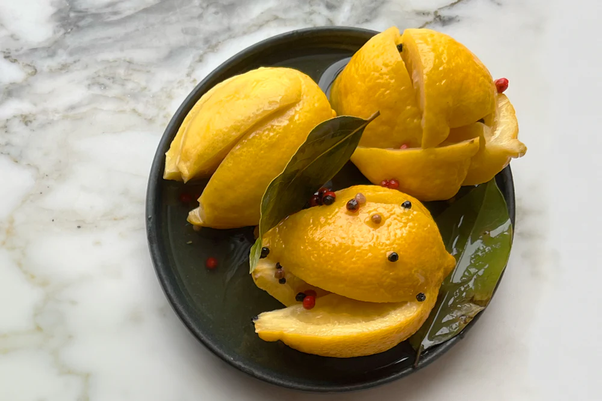

Preserved Lemons
Home

Steps
We believe a dish can comfort with familiarity and delight with surprise. This surprise might come from sumac on scrambled eggs or sweet-sour barberries in a frittata or salad. But the ultimate flavour bomb is preserved lemon skin, chopped or sliced. It pairs well with oily fish, grilled meats, or roasted vegetables. Experiment with it, but beware—it’s addictive. We store ours in Kilner jars, which are easy to find. Once you start, you'll always have a batch ready. The preserving process takes weeks, but preserved lemons have boundless potential.
Ingredients
- 6 unwaxed lemons
- 16 tbsp flaky sea salt
- 4 bay leaves
- 1/2 tsp peppercorns
- 6 lemons juiced
- Olive oil
Steps
- Before starting, get a jar just large enough to accommodate all the lemons tightly. To sterilise it, fill it up with boiling water, leave for a minute and then empty it. Allow it to dry out naturally without wiping it so it remains sterilised.
- Wash the lemons and cut a deep cross all the way from the top to 2cm from the base, so you are left with 4 quarters attached. Stuff each lemon with a spoonful of salt and place in the jar. Push the lemons in tightly so they are all squeezed together well. Add the bay leaves and peppercorns, seal the jar and leave for at least a week.
- After this initial period, remove the lid and press the lemons as hard as you can to squeeze as much of the juice out of them as possible. Add the lemon juice and cover with a thin layer of olive oil. Seal the jar and leave in a cool place for at least 4 weeks. The longer you leave them, the better the flavour.